2023-02-12
Quantum Mechanics in a simple story!
প্রবন্ধ-ইংরেজিClassical physics can accurately explain many phenomena around us. It is possible to predict exactly where a ball will go after being hit by the bat through classical physics.
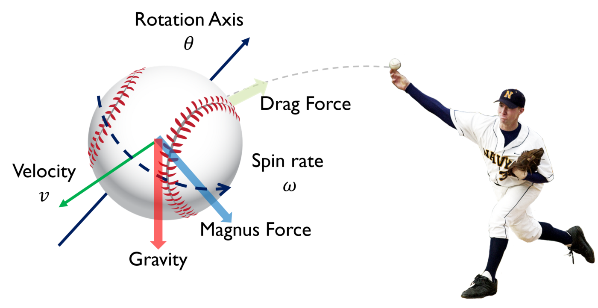
But at the very smallest level of matter at the subatomic level or nano level, all the formulas and explanations of classical physics become meaningless, where strange and unbelievable behavior can be observed. Richard Feynman, the winner of the Nobel Prize for contribution to quantum mechanics, he said
"If you think you understand quantum mechanics, you don't understand quantum mechanics."
From this quote of his, it can be understood how complicated quantum physics or quantum mechanics is! However, the most scientifically valid theory today is quantum physics. Using these Quantum theories, we have invented various technologies.
Let's see, What strange behavior can be seen even at the smallest level of the matter! Because of this, we do not understand quantum physics very well!
Double-slit experiment and the Interference pattern
Foremost, the following two-slit or Double-slit experiment needs to be well understood. If you pass a wave or wave of water through such a structure, the screen at the other end will show high waves in some places, low waves in some places, and no waves in some places. This is because the wave that was first transmitted enters the double slit and is converted into two. As a result, when one wave collides with another, two waves of the same nature or the same characteristic become a higher wave, and one of opposite nature or characteristics cancels each other out. Due to this a pattern of high-low waves is seen on the screen at the other end which is called an interference pattern. Interference patterns can be expressed through such a wave. Where this amplitude is high, there are high waves, and where the amplitude is low, short waves.
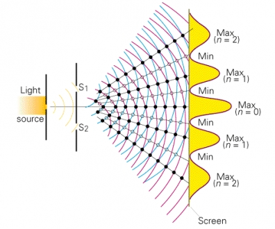
British physicist Thomas Young first performed this experiment in 1801. In this case, he uses light. He found that light was showing interference patterns. This proves that light is a wave or light has the properties of a wave. Until the end of the 19th century, scientists were convinced that light was a wave. But a problem arose.
Photoelectric effect
In 1887, German physicist Heinrich Rudolf Hertz observed a phenomenon called the photoelectric effect. In general, light cannot remove electrons from any metal. But Hertz found that light of higher energy than visible light could remove electrons from metals.
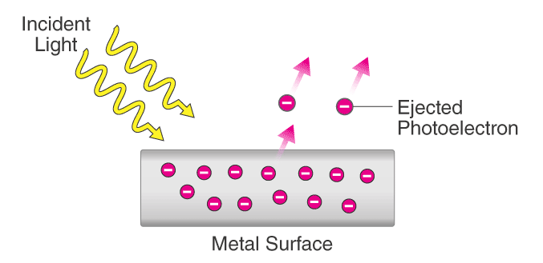
If the light was a wave then it wouldn't happen but it was happening anyway which creates a mystery. Nowadays, The most common example of the photoelectric effect is solar panels to generate electricity. Later this mystery was revealed by Albert Einstein. He proposed that light is not a wave but light is a packet of energy or a wave packet. What we now know as a photon.
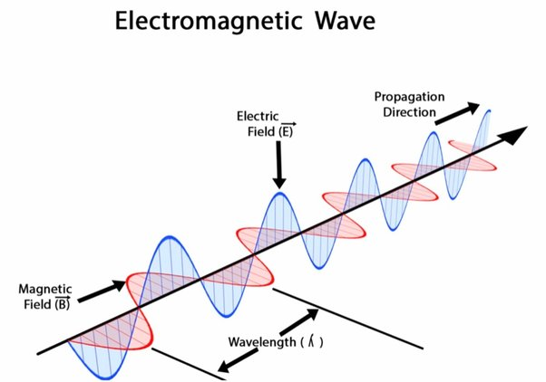
He said the power of this wave packet is proportional to the frequency of the wave.
That is, E = hf. Here, E is energy, h is Planck's constant, and f is frequency. Where the energy is higher and the frequency will be also higher. This means the frequency is higher, and the energy of the photon will be higher. As a result, higher-frequency light or photons carry more energy.
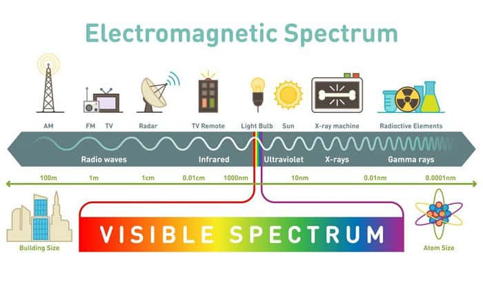
As a result, the light of a higher frequency than visible light could remove electrons from metals, and Einstein received the Nobel Prize for this work. However, a question arises from here, what is light or photon? Waves or particles! Because light cannot remove electrons from metals unless they behave like particles.
Wave-particle duality
Later in 1909, British physicist Sir Geoffrey Ingram Taylor performed the double slit experiment done by Thomas Young 100 years ago. But in this case, he used a single photon first. In the case of single photons, he was getting single spots on the screen. If the light is a wave then you should not get a spot for a single photon but when many photons are thrown into the double slit at the same time he observed the interference pattern on the screen. As a result, it was understood that a single or isolated photon behaves like a particle, and many photons together behave like a wave. Consequently, photons are assumed to be both waves and particles. Which is very embarrassing.
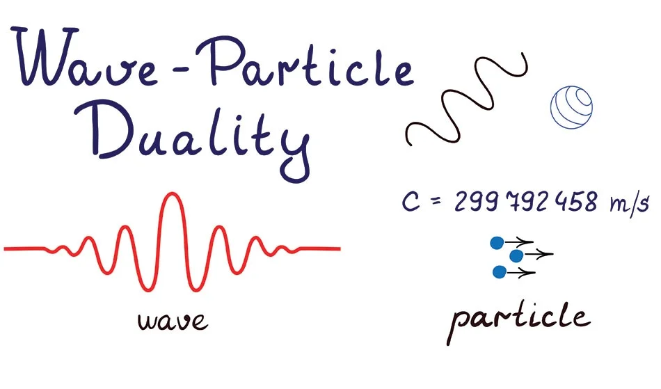
Later the double slit experiment was used for electrons. And the result in the case of electrons was a big shock to scientists. They found interference patterns for electrons as well. They were shocked to say. Electrons, which they had thought of as particles, were now behaving like waves, and not just waves. If a detector is used or attempted to be observed during a double slit experiment with electrons, the electron's wave properties are no longer available.
It was a big shock for the scientists to say that it was found then. They observed the particle properties of electrons. But again if no one observes or tries to observe the double slit experiment then the electron is again having like a wave. Which gives birth to a strange mystery. An electron is a particle when someone is looking and a wave when no one is looking, a really strange thing. Now the question is, how can the electron behave like a wave? We are familiar with ocean waves, which are generated by up and down waves. But what about the wave or waves of electrons?
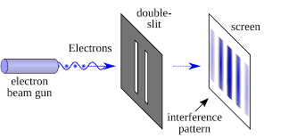
Schrödinger Equation
Later and in 1925, Erwin Schrödinger gave an equation of what the electron wave would look like. The equation was not as simple as the classical physics we know. Even Erwin Schrödinger himself could not fully explain this equation.
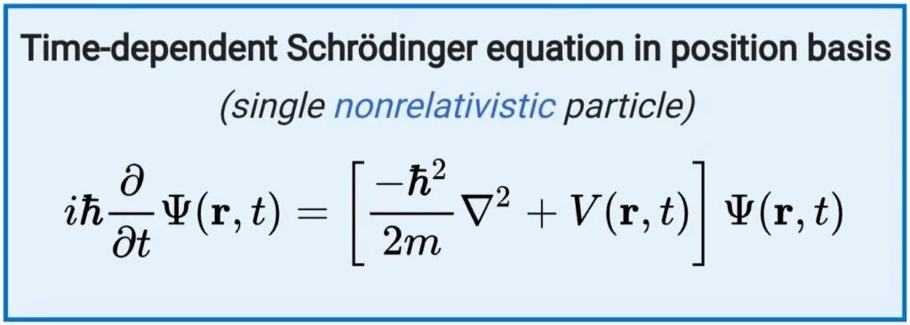
There was much debate about the interpretation of this equation, later in 1926 the German physicist Max Born presented an excellent and revolutionary idea in the interpretation of the wave equation. He said the wave equation deals with probability. Where the wave is large, the probability of getting electrons is high and where the wave is small, the probability of getting electrons is low.
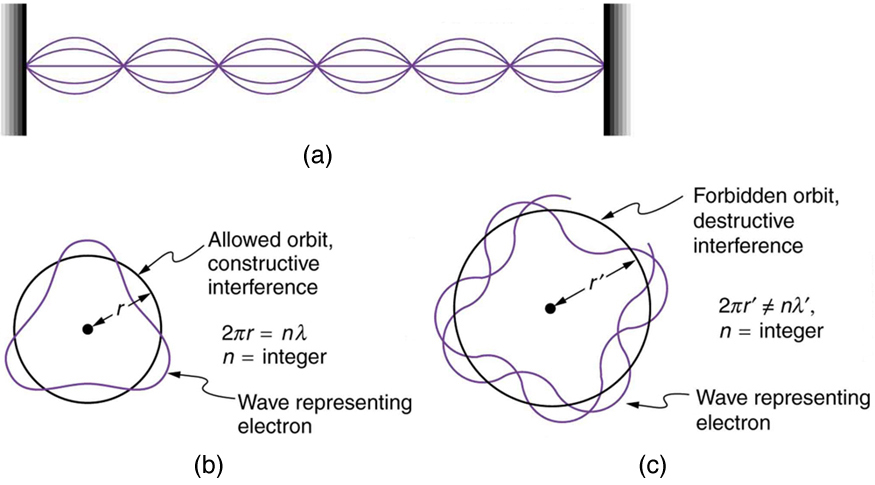
Does that mean you can never say for sure where the electron is! You can only say how likely it is to get an electron at a particular location. Strange as it may sound, this is how electron wave behavior is described. When you shoot an electron into the double slit, you can't tell where the electron will hit the screen! But you can tell how likely the screen is to hit a particular spot by explaining Schrödinger's probability wave equation.
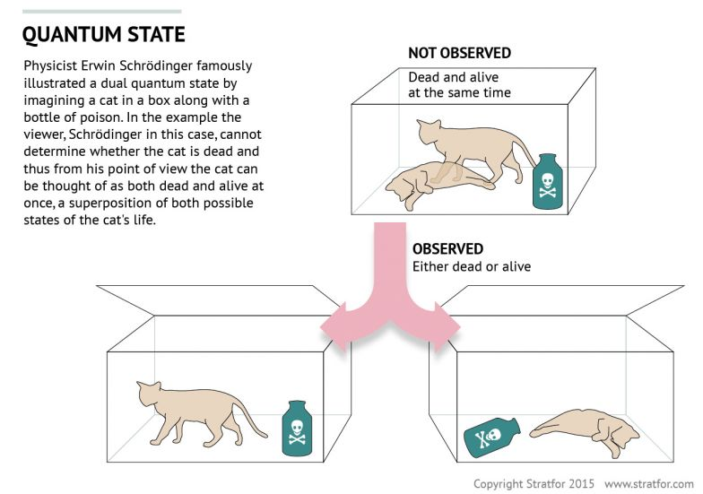
Schrödinger's wave equation and Max Born's explanation tell us how the electron will orbit. What will be the shape of the orbit! We can only tell the probability of where the electron will be in the orbital of the atom. Even after all this, the mystery remains. Because we are talking about the possibility of finding the electron in many places at once, but when we try to see where it is or make a measurement, we find the electron in a specific place. But why can't we first confirm where the electronics are? There are many explanations for this, but the most accepted explanation is given by Heisenberg and Niels Bohr. Their interpretation is called Copenhagen Interpretation.
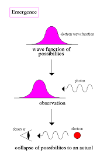
According to their explanation, the electron will be present in all possible places at the same time, as long as we try to see where the electron is. According to Niels Bohr, when an electron or any subatomic particle is measured or attempted to be observed, the active measurement forces the electron or other subatomic particle to bring all its possible presence to a specific location. The subject is very strange as well as haunting. To think that you are not seeing something means that it is present in all places at the same time and when you see it, it will come to a particular place. It is difficult to think of such behavior of any object!
Niels Bohr accepted that the reality of nature is very vague, but Einstein did not. As a result, he said, I want to think that if I don't look at the moon, the moon will remain in its position. Einstein believed that quantum physics or quantum mechanics is not wrong, but incomplete.
Heisenberg Uncertainty Principle
The Heisenberg Uncertainty Principle says that we can never know both the exact position and the exact speed of a particle at the same time. The more accurately we know one of these properties, the less accurately we know the other. This is because the act of measuring one property inevitably disturbs the other. The Heisenberg Uncertainty Principle is a fundamental feature of the quantum world and has important implications for our understanding of the nature of reality.
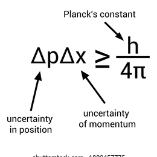
Quantum Entanglement
However, another strange behavior of subatomic particles comes to the fore. Which is called entanglement. Entanglement is a theoretical prediction derived from the equations of quantum mechanics. If two particles interact nearby or if two particles are produced from the same event, then a relationship is established between the properties of those two particles.
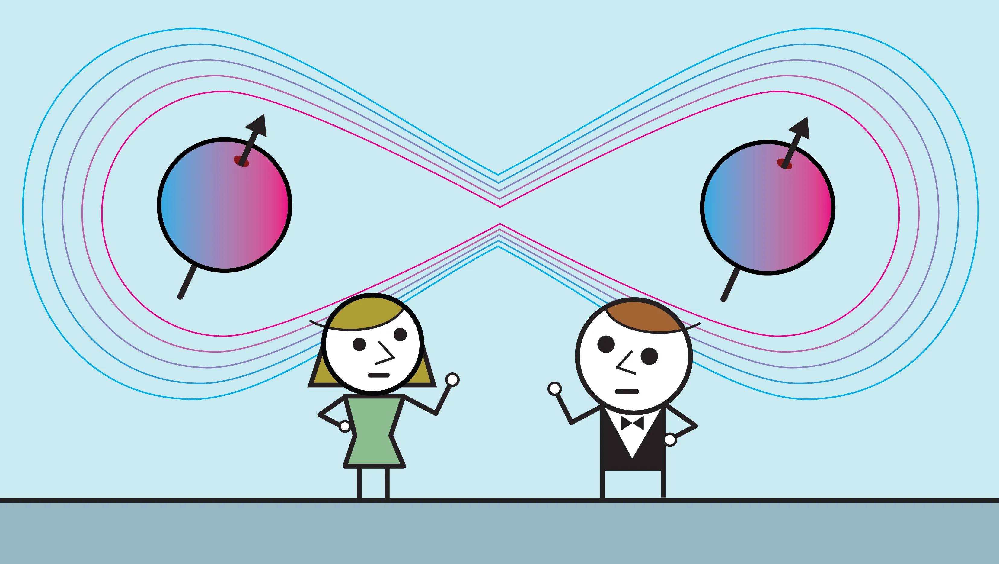
As a result, no matter how far apart the particles are, there will be some kind of contact between them. What Einstein called "Spooky Action at a Distance".
How is this entanglement? Consider two coin integral particles, one of which is placed on Earth and the other on Mars. Now if the coin placed on Earth comes up heads after tossing, then the coin placed on Mars will come up tails. And if the toss of the coin placed on earth comes tails, then the coin placed on Mars must come up heads, and this will happen every time and never the other way round. This is entanglement.
Quantum Superposition
A property of subatomic particles such as electrons is spin. Another feature of this spin is superposition, and this spin can be in both up and down states at the same time. And trying to see whether the spin is up or down comes to either particular state. Attempts are being made to build quantum computers using this superposition of subatomic particles. However, suppose the two electrons are in entanglement now there will be a strange interaction between these two electrons one electron is thought to be placed on the earth and the other on the moon. Now when we look at the Earth's electron, if it gets up spin, then the spin placed on the moon must get down spin, but how is this possible?
How do two integral particles communicate or connect? Despite being so far apart, how do the results of one affect the other? Now when we look at the Earth's electron, if it gets up spin, then the spin placed on the moon must get down spin, but how is this possible?
The answer to this question is still not clear to scientists. However, as a result of this property of particles, human teleportation may be successful or become a reality in the future.
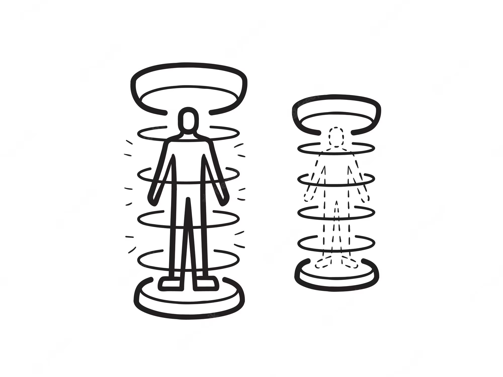
Quantum Tunneling
Another strange property of subatomic particles is quantum tunneling. Everyone has seen walking through walls in the Harry Potter series, but now to say that it is possible would be unbelievable.
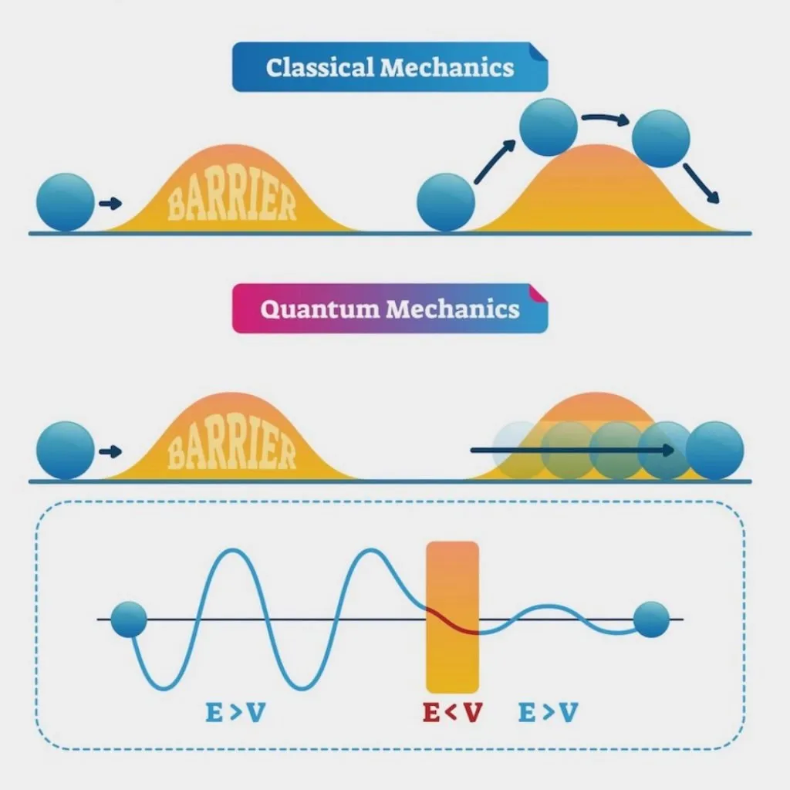
But it is possible with subatomic particles, called quantum tunneling. If you put an electron on one side of a wall, the probability of finding an electron on the other side of the wall is not zero. Because electrons behave like waves, and when the wave hits a wall, the wave does not disappear completely, some of it is found on the other side of the wall. As the wave is found on the other side of the wall, so is the possibility of the electron being found on the other side. This may seem like magic, but it is happening. As a result, the sun is shining. So, many electronic devices are working. However, quantum tunneling depends on the wall height, width, and particle mass.